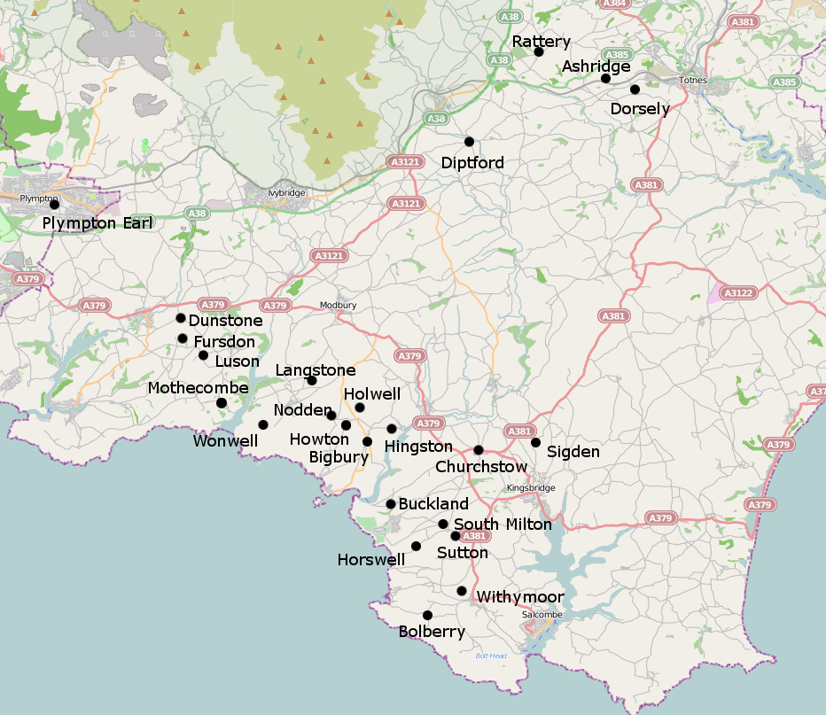

They appear to be the best chance we have of linking together the various Hingston lines before the introduction of parish registers. I have transcribed them below and have tried to identify (not always successfully) the various locations mentioned.
I have tried to piece together what we know about the early Hingstons in a chart on the Early Devon Hingstons Page.
Writ dated at Westminster 15 Feb. 3 Hen.VII. [1487/8].
Devon. (Delivered into court 16 Oct. by John Kerton). Inquisition taken at Exeter 20 Oct. 4 Hen.VII [1488] before Henry Lea, escheator, after the death of Robert Hengeston, by the oath of Richard Pomerey knt., John Hengescote esq., Will. Wydeslade esq., Thos. Denys, esq., Will. Chudley, esq., Roger Holond esq., John Bonvile, Will. Floyer, John Holbeme, John Boudon, Henry Kelly, John Lotyn and William Page; who say that Robert Hengeston long before his death was seized of a messuage and 4 furlongs in Hengeston, with common pasture in Bogbury; a messuage and 6 furlongs in Luyston; ½ a furlong and 6 messuages in Newton Ferrars; a messuage and ½ a furlong in Dunston in the parish of Yealmpton a messuage in Earl’s Plympton; a messuage and furlong in Petrystavy; tenement in Kingsbridge; a furlong in Langeston and Brounston, and 12d. in rent in Briggelond.
By charter dated 7 April 19 Edw.IV. [1479] he enfeoffed thereof Philip Courteney knt., Edward Courteney esq., Thos. Coterell esq., and Will. Fortescu esq., who are yet living thereof.
Robert Hengeston was likewise of 6 messuages and 4 furlongs in Howton, a messuage and 3 furlongs in Noddon and Holwell in the parish of Bygbury and a messuage and 4 furlongs on Haukerigge.
By charter dated 16 Jan. 3 Hen.VII. [1487/8] he enfeoffed thereof Thos. Coterell, Will. Fortescu and John Hengeston. The said feoffees demised a messuage and 4 furlongs on Hankerigge to Margaret who was wife of said Robert Hengeston for life; who still holds the same.
Premises in Hengeston, Langeston, Howton and Noddon are held of the heirs of William Bygbury in free socage; worth by the year clear, c0s (misprint).
Luyston held of Margaret countess of Richmond of her manor of Holbeton by fealty, worth &c., 20s.
Newton Ferrars held of Nicholas Delune and Patrick Bedlowe of their manor of N.F., by fealty worth &c., 20s.
Dunston held of Hugh Rope by fealty worth &c., 13s.4d.
Plympton Earl held by the burgesses of Plympton by fealty; worth &c., 13s.4d
Petrystavy held of the heirs of William Sachevyle by fealty worth &c., 6s.8d.
Kingsbridge held of the abbot of Buckfast, by fealty worth &c., 3s.4d.
Brounston and Briggeland held of the heirs of Will Ayssheford by fealty; worth &c., 5s.
Robert Hengeston died 28 Jan. John, son and heir aged 12.
Writ dated at Westminster 9 July 3 Hen.VIII. [1511], after the death of Philip Hendeyston esq.,
Devon. (Delivered into court 22 Oct. by Roger Elford). Inquisition taken at Exeter 1 Oct. [1511] before Philip Courteney escheator after the death of Philip Hyndyston, by the oath of John Prous esq., Gregory Fokerey esq., Henry Drewe, Will. Chudley, esq., Henry Ayssheton, John Sporway,John Holman, Simon Horswyll, Henry Sture, Henry Seynthill, Marton Groce, John Webber, Hugh Grenefild and John Moryshed; who say that one Robt. Hyndyston was long ago seized of a messuage and 4 furlongs in Hyndyston with common od pasture in Bigbury & lands in Langeston, Howton and Noddon held of the heirs of William Bigbury in free socage of the manor of Bigbury; worth by the year clear 40s;- A messuage and 6 furlongs in Luyston held of Margaret countess of “Rochemont” & Darby of her manor of Holbeton, by fealty worth &c., 20s;- ½ a furlong and 6 messuages in Newton Ferrers, held of Nicholas Delune and Patrick Bedlowde of the manor of Newton Ferrars in free socage worth &c., 20s. A messuage & ½ furlong in Dunston in the parish of Yelmpton held of the heirs of Hugh Rope by fealty; worth &c. 13s.4d. A messuage in Plympton Earl held of the burgesses of Plympton fealty worth &c., 3s.4d. A messuage and furlong in Petertavy held of the heirs of William Sachevyle by fealty worth &c. 6s.8d. A tenement in Kingsbridge held of the abbot of Buckfast, by fealty worth &c. 3s.4d. One furlong on Longeston and Brounston and 12d. rent in Bridgeland held of Nich. Aysheford by fealty; worth &c. 5s;- So seized by charter dated 7 April 19 Edw.IV [1479] the said Robert Hyndyston enfeoffed thereof Philip Courteney knt. Edward Courteney esq. Thos. Coterell esq. and William esq., Edward Courteney and William Fortescue are yet living and seized thereof.
The said Robert Hyndeston was also seized of 6 messuages and 4 furlongs in Howton a messuage and 3 furlongs in Noddon and Holwyll in the parish of Bigbury and messuages and furlong in Hawkridge, Plympton Earl, Luyston, Petertavy and 4s. rent in Holbeton and by charter dated 17 Jun 3 Hen VII. [1487/8] enfeoffed thereof Thos. Coterell, William Fortescue and John Hyndyston; who by their charter demised the premises in Hawkridge, Plympton Earl, Luyston, Petertavy and rent in Holbeton to Margaret who was wife of the said Robert Hyndyston for life. Margaret died 26 Oct. 24 Hen.VII [1508] and the premises fell to Elizabeth, Margaret, Joan and Agnes daughters and heirs of said Robert.
The said Robert Hyndyston was also seised of a messuage and 20 acres in Dipford held of the Lady Mary Hastings in free socage of her manor of Dipford; worth by the year, clear, 20s; 1 acre in Rattrew held of the abbot of St. Dogmael in “Kommays” (Pembroke), by fealty of his manor of Rattrew; worth &c., 6d. A furlong in Over and Nether Doursleigh and 8 acres in Wyndysland held of Richard Courtney, Earl of Devon of his manor of Baylyford, by fealty worth &c., 2’s. (Misprint for 20s.?). And a furlong in Aysshergge held of Margaret countess of Richmond and Derby in free socage of her manor of Dartington; worth &c., 20s. By charter dated Wednesday after Palm Sunday 19 Edw.IV. [Wednesday 7 April 1479] he granted the same to John Hyndyston his younger brother and Elizabeth late wife of John Bury of Colaton and the heirs of John H. They are both dead and John died without issue therefore the premises fell to Philip son of said Robert who died seized thereof.
The said Philip Hyndyston was also seized of a messuage and 100 acres and 3 tenements and 40 acres in Wonewyll, held of John Lord Fitzwarren in free socage; of his manor of Kingston; worth by the year clear £10. A messuage and 20 acres in Mouthcomb held of the abbot of Buckfast by fealty; worth &c. 26s. 8d. A tenement and garden in Great Totnes held of Peter Edgecomb, knt., in free socage, worth &c., 6s.8d. A tenement and 8 acres in Denbury held of the abbot of Tavistock in free socage, worth &c., 20d. And the moiety of a messuage and 40 acres in Long Huish, held of the prior of Plympton by fealty; worth &c., 5s.
Philip Hyndyston died 17 Oct. 24 Hen.VII. [1508] Eliz. Margaret, Joan and Agnes sisters and heirs all over 26.
It is also significant that the land held by Robert and Philip did not include the lands around South Milton, South Huish and Malborough, where we know there several Hingston families, nor did they include lands around East Allington, Moreleigh or Halwell (Tree HH).
Hengeston is Hingston Farm in Bigbury (50.305923, -3.860963)
Luyston is Luson in Holbeton (50.333396, -3.964916)
Dunston is Dunstone in Yealmpton (50.347392, -3.978961)
Earl's Plympton is a very small parish, now known as Plympton St Maurice and is part of the town of Plympton
Petrystavy is the parish of Peter Tavy (or Tavy St Peter) on the edge of Dartmoor. It is about 30 miles from Bigbury
Langeston, Brounston and Briggeland. Haukerigge/Hankerigge. The context implies these are close together and near Bigbury. There is a suitable Langston in the parish of Kingston (50.322899, -3.900414). There are several places called Brownston (one in Rattery, one in Holbeton (50.328658, -3.972443) and another in Modbury), but none close to a Langston, nor can I find Briggeland.
Howton, Noddon and Holwell are all identifiable as farms in Bigbury. Howton is now Houghton (50.30606, -3.885469), Nodden (50.308057, -3.89161) and Holwell is in the hamlet of St Ann’s Chapel (50.312409,-3.876972). I cannot find Haukrigge.
Over and Nether (i.e. Upper and Lower) Doursleigh is probably Dorsely in Harberton (50.429345, -3.721082). I can't find a suitable Wyndysland or Baylyford but they are presumably nearby.
Aysshergge is Lower Ashridge Harberton (50.432570, -3.736853)
Wonewyll is Wonwell, Kingston (50.312376, -3.926180)
Mouthcomb is Mothecomb in Holbeton (50.313761, -3.955518)
Denbury is the parish of that name near Newton Abbot and Staverton. (50.507591, -3.660142)
Long Huish has not been identified. Neither North Huish or South Huish appear to have been held by the priors of Plympton according to Magna Britannica.
Fursdon, Holbeton (50.339335, -3.974218)
The map below shows the locations I can identify in the South Hams. Peter Tavy, Denbury and Little Bovey all lie outside this area. The locations between the River Avon and Kingsbridge Estuary come from the 1535 and 1562 IPMs (below) and clearly relate to the South Milton/South Huish branch of the family, while most of the rest 1488 and 1511 IPMs (above) lie to the west of the River Avon or to an area closer to Totnes.
I have also added these locations to the Hingstons Map Page.

Sutton. There is a Lower Sutton, South Milton (50.267234, -3.822496) but there is also an Upper Sutton and other dwellings nearby.
Sigden. There is a Lower Sigdon, Charleton (50.300751, -3.776088) There is also an Upper Sigdon
Hollewill, South Huish (50.258745, -3.833595)
Horswill, Soth Milton (50.264788, -3.839163)
Goodwyll, South Milton has not been identified.
Little Bovey, Bovey Tracy (50.979159, -3.651072)
Boltebery Beuchamp. Bolberry Beauchamp, a manor in Bolberry, a hamlet in Malborough parish (50.239106, -3.837447). The exact location has not yet been identified.
Buckland. A hamlet in Thurlestone (50.277898, -3.859580).
Withymoore is Withymore South Huish 50.247004, -3.821595
Devon. (Delivered into court 2 Nov. by Will. Walshe.) Inquisition taken at Exeter 6 Oct. 27 Hen.VIII. [1535] before Humfrey Predyaux escheator by the oath of Thomas [Foughell?], esq., Alexr. Wollacomb, esq., Nichloas Ayshe, John Brown, William Michelmore, John Legh, Francis Coppleston, John Lech, John Bury sen., John Bury jun., Nicholas [Bates?] Will Sachfeld, John Vele, Rich. Langfford and Thomas Predyaux; who say that William Hengston was seized of a messuage and 22 acres in Sutton in the parish of Southmylton, held of John Bourchier de Fitzwarren knt., by fealty and 4s.1d. rent and suit of court; worth by the year, clear, 40s. Eight acres in Sigden held by the prioress of Polslow by fealty and 1½d. rent; worth &c., 10s. Ten acres in Hollewill in the parish of Southmylton, held of Alice Pyke widow by fealty and 3s.4d. rent; worth &c. 13s.4d. Two acres in Sutton held of John Carowe of Haccomb esq., by fealty 8d. rent and suit of court at Milton worth &c., 4s. Four acres in Horswill held of Robt. Hyll esq., of his manor of Horswyll, by fealty 1d. rent and suit of court; worth &c., 5s. One fourth of the manor of Little Bovey held of Henry Duke of Richmond of Barnstaple castle by fealty 6d. rent, 3d. scutage, aid towards knighting the Duke’s son and marrying his daughter and suit of court; worth &c., 20s. And a virgate in Churstow, held of the abbot of Buckfast of his manor of Churctowe be fealty and ½d. rent; worth &c., 4d.
By charter dated 27 June Hen.VIII. [1522] he enfeoffed of those lands (lying in the parishes of South Milton, Bovey Tracy and Charlton) John Upton of Bakedon, Will. Gilbert of Churstow, John Hengston of Boltebury Beuchamp, Richard Roupe of Milton, John Lome, Will Phelypp of Thurlestone, Robt. Tabbe, John Crispyn of Heddeswyll jun., Thos. Michelmore and Thos. Barrett to fulfil the last will of the said William Hengston annexed to that charter.
William Hengston died 20 March 16 Hen.VIII. [1524/5]
Kinsman and heir, William son of John son of said William Hengston, aged 22.
Abstract. Writ dated at Westminster 22 Feb. 5 Elizabeth [1562/3].
Devon. Inquisition taken at Exeter castle 23 Apr. [1563] before Thomas Broun esq., escheator, by the oath of Gregory Huckamore esq., Robert Frye, esq., Thos. Drewe of Sharpham, Thomas Hele, John Prouse, Humfrey Broughton, Thos. Synckler, George Synckler, John Shere, Thos. Huyssh, and John Prygges; who say that William Hingiston of Southmylton was seized in his demesne as of fee of a messuage and 22 acres [details given] in Sutton in the paish of Southmylton, held of Henry Beacher gent., of his manor of Sutton, by fealty and 4s.1d. rent, and suit of court; worth by the year clear, 40s. 8 acres in Sygdon in the parish of Charleton held of John Peter gent, of the manor of Sygdon by fealty and 1½d. rent; worth &c., 10s. 10 acres in Hollywyll in the parish of Southmylton held of Stephen Pyke by fealty and 3s.4d. rent; worth &c., 13s.4d. Two acres in Sutton aforesaid held of Thos. Carewe of Haccombe esq., of his manor of South Milton by fealty 8d. rent and suit of court; worth &c., 4s. Fifteen acres in Goodwyll in the parish of South Milton held of Robert Hyll, esq., of his manor of Horsewyll by fealty and 12d. rent; worth &c., 10s. A messuage and 5 acres in Sutton aforesaid held of Thomas Carewe as above, by fealty and 2d. rent; worth &c., 13s.4d. A messuage and 10 acres in Buckelande in the parish of Thurlestone held of William Cortnay knt., a minor and the King’s ward of his manor of Boltbury Beacham by fealty and 4d. rent; worth &c., 5s. A messuage and garden in the borough of Kingsbridge held of William Peter knt., of his borough of Kingsbridge by 6d. rent; worth &c., 16s. And a messuage appleyard and garden in South Milton held of Thos. Carewe’s manor of South Milton by fealty and ¾d. rent; worth &c., 5s.
William Hengiston died 5 Feb. [1562/3].
John, son and heir, aged 23.
Abstract. Devon. Inquisition taken at Kingsbridge 3 September 22 James I. [1624] before John Tredingham gent., escheator by the oath of Richard Bastard, Alexander Wolcott, John Lapp, Robert Sayer, John Ellye, Nicholas White, gentlemen, William Gilbert, Walter Collis, Leonard Kent, Bernard Schreech, James Gilbert, George Bartlett and John Phillipps; who say that John Hingston was seized in his demesne as of fee of a messuage and appleyard and 20 acres in Withymoore in the parish of South Huish and on 1 March 21 James I. [1623/4] made his will bequeathing the same to Margery his then wife and her heirs. The premises are held of William Courteney knt., of his manor of South Huish, in free socage; worth by the year clear, 40s.
John Hingston died since the 10th March last past.
Anna Hingston aged 18, Grace Hingston aged 16, Joan Hingston aged 14, Elizabeth Hingston aged 12 and Petronella Hingston aged 5 daughters and heirs.
Devon. Inquisition taken at Modbury 29 Aug. 4 Charles I. [1628] before Henry Underdowne, esq., escheator, and John Were, esq., feodary by the oath of Robert Baker, William Norwood, John Cunyngham, Peter Powninge, gentlemen, Edward Penhay, Philip Talb, Richard Venynge, Thomas Cook, William Ford, Richard Blake, Michael Horwill and John Cole; who say that John Hingston, late of Holbeton, yeoman, was seized in his demesne as of fee of a messuage, garden, appleyard and 30 acres called Fursdon in the parish of Holbeton, held of John Hele, esq., of his manor of Holbeton by 12s. rent; worth by the year, clear, 40s.
John Hingston died 3 Nov. 1 Charles I. [1625];
William son and heir then aged 19 and 7 months.
A furlong was traditionally a unit of length (220 yards) and was supposed to be the distance an ox could plough without having to relax. In these IPMs it is clearly being used to define an area; if it means a square furlong it is equivalent to 10 acres.
A virgate was a larger unit still, equivalent to 30 acres and was supposedly the area that two oxen could plough in one season.
The value of money in past times is very difficult to translate into modern values because expectations, standards of living and the availability of goods was so different. The attached values are taken from the Measuring Worth website.
In 1488, £1 in earnings would be worth about £6400 in 2010.
In 1635, £1 in earnings would be worth about £2250 in 2010.
Note that in 1488, even one farthing (¼d) would today be worth £8.